농산물품질관리사-1차 (2018-05-12 기출문제)
1과목: 관계 법령
1. 농수산물 품질관리법 제2조(정의)에 관한 내용이다. ( )안에 들어갈 내용을 순서대로 옳게 나열한 것은?
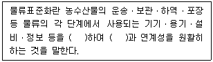
- 규격화, 호환성
- 표준화, 신속성
- 다양화, 호환성
- 등급화, 다양성
(정답률: 70%)

2. 농수산물 품질관리법령상 농수산물품질관리심의회의 위원을 구성할 경우, 그 위원을 지명할 수 있는 단체 및 기관의 장을 모두 고른 것은?
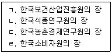
- ㄱ, ㄴ
- ㄷ, ㄹ
- ㄴ, ㄷ, ㄹ
- ㄱ, ㄴ, ㄷ, ㄹ
(정답률: 64%)
3. 농수산물 품질관리법령상 농산물 검사 결과의 이의신청과 재검사에 관한 설명으로 옳지 않은 것은?
- 농산물 검사 결과에 이의가 있는 자는 검사현장에서 검사를 실시한 농산물검사관에게 재검사를 요구할 수 있다.
- 재검사 요구 시 농산물검사관은 7일 이내에 재검사 여부를 결정하여야 한다.
- 재검사 결과에 이의가 있는 자는 재검사일로부터 7일 이내에 이의신청을 할 수 있다.
- 재검사 결과에 이의신청을 받은 기관의 장은 그 신청을 받은 날부터 5일 이내에 다시 검사하여 그 결과를 이의신청자에게 알려야 한다.
(정답률: 46%)
4. 농수산물 품질관리법령상 농산물품질관리사의 직무가 아닌 것은?
- 농산물의 등급 판정
- 농산물의 생산 및 수확 후 품질관리기술 지도
- 농산물의 출하 시기 조절에 관한 조언
- 농산물의 검사 및 물류비용 조사
(정답률: 75%)
5. 농수산물 품질관리법령상 우수관리인증농산물의 표지 및 표시사항에 관한 설명으로 옳은 것은?
- 표지형태 및 글자표기는 변형할 수 없다.
- 표지도형의 한글 글자는 명조체로 한다.
- 표지도형의 색상은 파란색을 기본색상으로 한다.
- 사과는 생산연도를 표시하여야 한다.
(정답률: 70%)
6. 농수산물 품질관리법령상 농산물 유통자의 이력추적관리 등록사항에 해당하는 것만을 옳게 고른 것은?
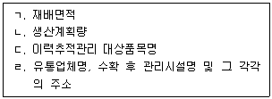
- ㄷ
- ㄹ
- ㄷ, ㄹ
- ㄱ, ㄴ, ㄷ, ㄹ
(정답률: 25%)
7. 농수산물 품질관리법령상 지리적표시의 등록을 결정한 경우 공고하여야 할 사항이 아닌 것은?
- 지리적표시 대상지역의 범위
- 품질의 특성과 지리적 요인의 관계
- 특산품의 유명성과 역사성을 증명할 수 있는 자료
- 등록자의 자체품질기준 및 품질관리계획서
(정답률: 58%)
8. 농수산물 품질관리법령상 농산물우수관리의 인증 및 기관에 관한 설명으로 옳지 않은 것은?
- 우수관리기준에 따라 생산ㆍ관리된 농산물을 포장하여 유통하는 자도 우수관리인증을 받을 수 있다.
- 수입되는 농산물에 대해서는 외국의 기관도 우수관리인증기관으로 지정될 수 있다.
- 우수관리인증기관 지정의 유효기간은 지정을 받은 날부터 5년으로 한다.
- 우수관리인증기관의 장은 우수관리인증 신청을 받은 경우 현지심사를 필수적으로 하여야한다.
(정답률: 50%)
9. 농수산물 품질관리법령상 포장규격에 있어 한국산업표준과 다르게 정할 필요가 있다고 인정되는 경우 그 규격을 따로 정할 수 있는 항목이 아닌 것은?
- 포장등급
- 거래단위
- 포장설계
- 표시사항
(정답률: 43%)
10. 농수산물의 원산지 표시에 관한 법령상 대통령령으로 정하는 집단급식소를 설치ㆍ운영하는 자가 농산물이나 그 가공품을 조리하여 판매ㆍ제공하는 경우 그 원료의 원산지 표시대상이 아닌 것은?
- 쇠고기
- 돼지고기
- 가공두부
- 죽에 사용하는 쌀
(정답률: 77%)
11. 농수산물의 원산지 표시에 관한 법령상 A음식점은 배추김치의 고춧가루 원산지를 표시하지 않았으며, 매입일로부터 6개월간 구입한 원산지 표시대상 농산물의 영수증 등 증빙서류를 비치ㆍ보관하지 않아서 적발되었다. 이 A음식점에 부과할 과태료의 총 합산금액은? (단, 모두 1차 위반이며, 경감은 고려하지 않는다.)
- 30만원
- 50만원
- 60만원
- 100만원
(정답률: 46%)
12. 농수산물 품질관리법령상 지리적표시품의 표시방법 등에 관한 설명으로 옳은 것은?
- 포장재 주 표시면의 중앙에 표시하되, 포장재 구조상 중앙에 표시하기 어려울 경우에는 표시위치를 변경할 수 있다.
- 표시사항 중 표준규격 등 다른 규정ㆍ법률에 따라 표시하고 있는 사항은 모두 표시하여야 한다.
- 표지도형 하단의 "농림축산식품부"와 "MAFRA KOREA"의 글자는 녹색으로 한다.
- 포장재 15 kg을 기준으로 글자의 크기 중 등록명칭(한글,영문)은 가로 2.0 cm(57pt.) × 세로 2.5 cm(71pt.)이다.
(정답률: 50%)
13. 농수산물 품질관리법령상 축산물을 제외한 농산물의 품질 향상과 안전한 농산물의 생산ㆍ공급을 위한 안전관리계획을 매년 수립ㆍ시행하여야 하는 자는?
- 식품의약품안전처장
- 농촌진흥청장
- 농림축산식품부장관
- 시ㆍ도지사
(정답률: 70%)
14. 농수산물 품질관리법령상 안전성검사기관의 지정을 취소해야 하는 사유가 아닌 것은? (단, 경감은 고려하지 않는다.)
- 거짓으로 지정을 받은 경우
- 검사성적서를 거짓으로 내준 경우
- 부정한 방법으로 지정을 받은 경우
- 업무의 정지명령을 위반하여 계속 안전성조사 및 시험분석 업무를 한 경우
(정답률: 75%)
15. 농수산물 품질관리법령상 유전자변형농산물 표시의무자가 거짓표시 등의 금지를 위반하여 처분이 확정된 경우, 식품의약품안전처장이 지체 없이 식품의약품안전처의 인터넷 홈페이지에 게시해야 할 사항이 아닌 것은?
- 영업의 종류
- 위반 기간
- 영업소의 명칭 및 주소
- 처분권자, 처분일 및 처분내용
(정답률: 54%)
16. 농수산물 품질관리법령상 다음의 위반행위자 중 가장 무거운 처분기준(A)과 가장 가벼운 처분기준(B)에 해당하는 것은?
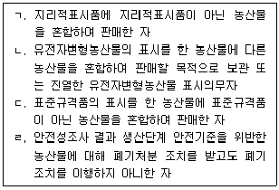
- A: ㄱ, B: ㄴ
- A: ㄱ, B: ㄷ
- A: ㄴ, B: ㄹ
- A: ㄷ, B: ㄹ
(정답률: 74%)
17. 농수산물 유통 및 가격안정에 관한 법률에 따른 민영도매시장의 개설에 관한 사항이다. ( )안에 들어갈 숫자를 순서대로 나열한 것은?
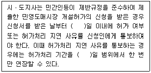
- 30, 10
- 45, 30
- 60, 30
- 90, 45
(정답률: 77%)
18. 농수산물 유통 및 가격안정에 관한 법령상 도매시장 개설자가 거래관계자의 편익과 소비자 보호를 위하여 이행하여야 하는 사항으로 옳지 않은 것은?
- 도매시장 시설의 정비ㆍ개선과 합리적인 관리
- 경쟁촉진과 공정한 거래질서의 확립 및 환경개선
- 도매시장법인 간의 인수와 합병 명령
- 상품성 향상을 위한 규격화, 포장개선 및 선도 유지의 촉진
(정답률: 55%)
19. 농수산물 유통 및 가격안정에 관한 법령상 농림축산식품부장관이 하는 가격예시에 관한 설명으로 옳은 것은?
- 주요농산물의 수급조절과 가격안정을 위하여 해당 농산물의 수확기 이전에 하한가격을 예시할 수 있다.
- 가격예시의 대상품목은 계약생산 또는 계약출하를 하는 농산물로서 농림축산식품부장관이 지정하는 품목으로 한다.
- 예시가격을 결정할 때에는 미리 공정거래위원장과 협의하여야 한다.
- 예시가격을 지지하기 위하여 농산물 도매시장을 통합하는 정책을 추진하여야 한다.
(정답률: 64%)
20. 농수산물 유통 및 가격안정에 관한 법률상 공판장과 민영도매시장에 관한 설명으로 옳지 않은 것은?
- 농업협동조합중앙회가 개설한 공판장은 농협경제지주회사 및 그 자회사가 개설한 것으로 본다.
- 도매시장공판장은 농림수협등의 유통자회사로 하여금 운영하게 할 수 있다.
- 민영도매시장의 경매사는 민영도매시장의 개설자가 임면한다.
- 공판장의 시장도매인은 공판장의 개설자가 지정한다.
(정답률: 54%)
21. 농수산물 유통 및 가격안정에 관한 법령상 도매시장법인이 겸영사업(선별, 배송 등)을 할 수 있는 경우는? (단, 다른 사항은 고려하지 않는다.)
- 부채비율이 250퍼센트인 경우
- 유동부채비율이 150퍼센트인 경우
- 유동비율이 50퍼센트인 경우
- 당기순손실이 3개 회계연도 계속하여 발생한 경우
(정답률: 40%)
22. 농수산물 유통 및 가격안정에 관한 법령상 산지유통인에 관한 설명으로 옳지 않은 것은?
- 산지유통인은 등록된 도매시장에서 농산물의 출하업무 외에 중개업무를 할 수 있다.
- 농수산물도매시장ㆍ농수산물공판장 또는 민영농수산물도매시장의 개설자에게 등록하여야 한다.
- 주산지협의체의 위원이 될 수 있다.
- 도매시장법인의 주주는 해당 도매시장에서 산지유통인의 업무를 하여서는 아니 된다.
(정답률: 50%)
23. 농수산물 유통 및 가격안정에 관한 법령상 주산지의 지정 등에 관한 설명으로 옳지 않은 것은?
- 시ㆍ도지사는 주요 농산물을 생산하는 자에 대하여 기술지도 등 필요한 지원을 할 수 있다.
- 주요 농산물의 재배면적은 농림축산식품부장관이 고시하는 면적 이상이어야 한다.
- 주요 농산물의 출하량은 농림축산식품부장관이 고시하는 수량 이상이어야 한다.
- 주요 농산물의 생산지역의 지정은 시ㆍ군ㆍ구 단위로 한정된다.
(정답률: 57%)
24. 농수산물 유통 및 가격안정에 관한 법령상 농산물의 유통조절명령에 관한 설명으로 옳은 것은?
- 농산물수급조절위원회와의 협의를 거쳐 농림축산식품부장관이 발한다.
- 생산자단체가 유통명령을 요청할 경우 해당 생산자단체 출석회원 과반수의 찬성을 얻어야 한다.
- 기획재정부장관이 예상 수요량을 감안하여 유통명령의 발령 기준을 고시한다.
- 유통명령을 하는 이유, 대상품목, 대상자, 유통조절방법 등 대통령령으로 정하는 사항이 포함되어야 한다.
(정답률: 34%)
25. 농수산물 유통 및 가격안정에 관한 법령상 대통령령으로 정하는 농산물의 유통구조 개선 및 가격안정과 종자산업의 진흥을 위하여 필요한 사업 중 농산물가격안정기금에서 지출할 수 있는 사업으로 옳지 않은 것은?
- 종자산업의 진흥과 관련된 우수 유전자원의 수집 및 조사ㆍ연구
- 농산물의 유통구조 개선 및 가격안정사업과 관련된 해외시장개척
- 식량작물의 유통구조 개선을 위한 생산자의 공동이용시설에 대한 지원
- 농산물 가격안정을 위한 안전성 강화와 관련된 검사ㆍ분석시설 지원
(정답률: 34%)
2과목: 원예작물학
26. 원예작물이 속한 과(科, family)로 옳지 않은 것은?
- 아욱과: 무궁화
- 국화과: 상추
- 장미과: 블루베리
- 가지과: 파프리카
(정답률: 59%)
27. 원예작물과 주요 기능성 물질의 연결이 옳지 않은 것은?
- 토마토 – 엘라테린(elaterin)
- 수박 – 시트룰린(citrulline)
- 우엉 – 이눌린(inulin)
- 포도 - 레스베라트롤(resveratrol)
(정답률: 58%)
28. 양지식물을 반음지에서 재배할 때 나타나는 현상으로 옳지 않은 것은?
- 잎이 넓어지고 두께가 얇아진다.
- 뿌리가 길게 신장하고, 뿌리털이 많아진다.
- 줄기가 가늘어지고 마디 사이는 길어진다.
- 꽃의 크기가 작아지고, 꽃수가 감소한다.
(정답률: 70%)
29. DIF에 관한 설명으로 옳지 않은 것은?
- 주야간 온도 차이를 의미하며 낮 온도에서 밤 온도를 뺀 값이다.
- DIF의 적용 범위는 식물체의 생육 적정온도 내에서 이루어져야 한다.
- 분화용 포인세티아, 국화, 나팔나리의 초장조절에 이용된다.
- 정(+)의 DIF는 식물의 GA 생합성을 감소시켜 절간신장을 억제한다.
(정답률: 47%)
30. 구근 화훼류를 모두 고른 것은?
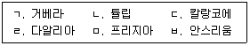
- ㄱ, ㄴ, ㅁ
- ㄱ, ㄷ, ㅂ
- ㄴ, ㄹ, ㅁ
- ㄷ, ㄹ, ㅂ
(정답률: 73%)
31. 포인세티아 재배에서 자연 일장이 짧은 시기에 전조처리를 하는 목적은?
- 휴면 타파
- 휴면 유도
- 개화 촉진
- 개화 억제
(정답률: 50%)
32. 종자번식과 비교할 때 영양번식의 장점이 아닌 것은?
- 모본의 유전적인 형질이 그대로 유지된다.
- 화목류의 경우 개화까지의 기간을 단축할 수 있다.
- 번식재료의 원거리 수송과 장기저장이 용이하다.
- 불임성이나 단위결과성 화훼류를 번식할 수 있다.
(정답률: 70%)
33. 난과식물의 생태 분류에서 온대성 난에 속하지 않은 것은?
- 춘란
- 한란
- 호접란
- 풍란
(정답률: 48%)
34. 감자의 괴경이 햇빛에 노출될 경우 발생하는 독성 물질은?
- 캡사이신(capsaicin)
- 솔라닌(solanine)
- 아미그달린(amygdalin)
- 시니그린(sinigrin)
(정답률: 86%)
35. 화훼작물에서 세균에 의해 발생하는 병과 그 원인균으로 옳은 것은?
- 풋마름병 – Pseudomonas
- 흰가루병 – Sphaerotheca
- 줄기녹병 – Puccinia
- 잘록병 - ythiumP
(정답률: 알수없음)
36. 관엽식물을 실내에서 키울 때 효과로 옳지 않은 것은?
- 유해물질 흡수에 의한 공기정화
- 음이온 발생
- 유해전자파 감소
- 실내습도 감소
(정답률: 69%)
37. 양액재배의 장점으로 옳지 않은 것은?
- 토양재배가 어려운 곳에서도 가능하다.
- 재배관리의 생력화와 자동화가 용이하다.
- 양액의 완충능력이 토양에 비하여 크다.
- 생육이 빠르고 균일하여 수량이 증대된다.
(정답률: 63%)
38. 절화보존제의 주요 구성성분으로 옳지 않은 것은?
- HQS
- 에테폰
- AgNO3
- sucrose
(정답률: 70%)
39. 낙엽과수의 자발휴면 개시기의 체내 변화에 관한 설명으로 옳지 않은 것은?
- 호흡이 증가한다.
- 생장억제물질이 증가한다.
- 체내 수분함량이 감소한다.
- 효소의 활성이 감소한다.
(정답률: 86%)
40. 철사나 나무가지 등으로 틀을 만들고 식물을 심어 여러 가지 동물 모양으로 만든 화훼장식은?
- 토피어리(topiary)
- 포푸리(potpourri)
- 테라리움(terrarium)
- 디쉬가든(dish garden)
(정답률: 67%)
41. 채소 재배에서 직파와 비교할 때 육묘의 목적으로 옳지 않은 것은?
- 수확량을 높일 수 있다.
- 본밭의 토지이용률을 증가시킬 수 있다.
- 생육이 균일하고 종자 소요량이 증가한다.
- 조기 수확이 가능하다.
(정답률: 79%)
42. 마늘의 휴면 경과 후 인경 비대를 촉진하는 환경 조건은?
- 저온, 단일
- 저온, 장일
- 고온, 단일
- 고온, 장일
(정답률: 40%)
43. 과수에서 다음 설명에 공통으로 해당되는 병원체는?
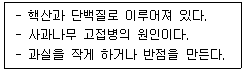
- 박테리아
- 바이러스
- 바이로이드
- 파이토플라즈마
(정답률: 80%)
44. 1년생 가지에 착과되는 과수를 모두 고른 것은?
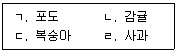
- ㄱ, ㄴ
- ㄱ, ㄹ
- ㄴ, ㄷ
- ㄷ, ㄹ
(정답률: 64%)
45. 뿌리의 양분 흡수기능이 상실되거나 식물체 생육이 불량하여 빠르게 영양공급을 해야 할 때 잎에 실시하는 보조 시비방법은?
- 조구시비
- 엽면시비
- 윤구시비
- 방사구시비
(정답률: 93%)
46. 감나무의 생리적 낙과의 방지 대책이 아닌 것은?
- 수분수를 혼식한다.
- 적과로 과다 결실을 방지한다.
- 영양분을 충분히 공급하여 영양생장을 지속시킨다.
- 단위결실을 유도하는 식물생장조절제를 개화 직전 꽃에 살포한다.
(정답률: 47%)
47. 여러 개의 원줄기가 자라 지상부를 구성하는 관목성 과수에 해당하는 것은?
- 대추
- 사과
- 블루베리
- 포도
(정답률: 60%)
48. 과수의 환상박피(環狀剝皮) 효과로 옳지 않은 것은?
- 꽃눈분화 촉진
- 과실발육 촉진
- 과실성숙 촉진
- 뿌리생장 촉진
(정답률: 59%)
49. 과수와 실생 대목의 연결로 옳지 않은 것은?
- 배 – 야광나무
- 감- 고욤나무
- 복숭아 – 산복사나무
- 사과- 아그배나무
(정답률: 58%)
50. 과수의 가지 종류에 관한 설명으로 옳지 않은 것은?
- 원가지: 원줄기에 발생한 큰 가지
- 열매가지: 과실이 붙어 있는 가지
- 새가지: 그해에 자란 잎이 붙어 있는 가지
- 곁가지: 새가지의 곁눈이 그해에 자라서 된 가지
(정답률: 알수없음)
3과목: 수확 후 품질관리론
51. 원예산물의 수확에 관한 설명으로 옳지 않은 것은?
- 포도는 열과(裂果)의 발생을 방지하기 위하여 비가 온 후 바로 수확한다.
- 블루베리는 손으로 수확하는 것이 일반적이나 기계 수확기를 이용하기도 한다.
- 복숭아는 압상을 받지 않도록 손바닥으로 감싸고 가볍게 밀어 올려 수확한다.
- 파프리카는 과경을 매끈하게 절단하여 수확한다.
(정답률: 73%)
52. 과실의 수확시기에 관한 설명으로 옳은 것은?
- 포도는 산도가 가장 높을 때 수확한다.
- 바나나는 단맛이 가장 강할 때 수확한다.
- 후지 사과는 만개 후 160~170일에 수확한다.
- 감귤은 요오드반응으로 청색면적이 20~30 %일 때 수확한다.
(정답률: 54%)
53. 저장중 원예산물의 증산작용에 관한 설명으로 옳지 않은 것은?
- 상대습도가 높으면 증가한다.
- 온도가 높을수록 증가한다.
- 광(光)이 있으면 증가한다.
- 공기 유속이 빠를수록 증가한다.
(정답률: 67%)
54. 호흡형이 같은 원예산물을 모두 고른 것은?
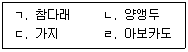
- ㄱ, ㄴ
- ㄱ, ㄷ
- ㄴ, ㄷ
- ㄴ, ㄷ, ㄹ
(정답률: 47%)
55. 원예산물의 에틸렌 제어에 관한 설명으로 옳은 것은?
- STS는 에틸렌을 흡착한다.
- KMnO4는 에틸렌을 분해한다.
- 1-MCP는 에틸렌을 산화시킨다.
- AVG는 에틸렌 생합성을 억제한다.
(정답률: 48%)
56. 토마토의 후숙 과정에서 조직의 연화 관련 성분과 효소의 연결이 옳은 것은?
- 펙틴 – 폴리갈락투로나제
- 펙틴- 폴리페놀옥시다제
- 폴리페놀 – 폴리갈락투로나제
- 폴리페놀- 폴리페놀옥시다제
(정답률: 54%)
57. 원예산물의 성숙 과정에서 발현되는 색소 성분이 아닌 것은?
- 클로로필
- 라이코펜
- 안토시아닌
- 카로티노이드
(정답률: 50%)
58. 신선편이 농산물의 제조 시 살균소독제로 사용되는 것은?
- 안식향산
- 소르빈산
- 염화나트륨
- 차아염소산나트륨
(정답률: 70%)
59. 신선 농산물의 MA포장재료로 적합한 것은?
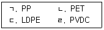
- ㄱ, ㄷ
- ㄱ, ㄹ
- ㄴ, ㄷ
- ㄴ, ㄹ
(정답률: 57%)
60. HACCP 7원칙에 해당하지 않는 것은?
- 위해요소 분석
- 중점관리점 결정
- 제조공장현장 확인
- 개선조치방법 수립
(정답률: 58%)
61. CA저장고에 관한 설명으로 적합하지 않은 것은?
- 저장고의 밀폐도가 높아야 한다.
- 저장 대상 작물, 품종, 재배조건에 따라 CA조건을 적절하게 설정하여야 한다.
- 장시간 작업 시 질식 우려가 있으므로 외부 대기자를 두어 내부를 주시하여야 한다.
- 저장고내 산소 농도는 산소발생장치를 이용하여 조절한다.
(정답률: 50%)
62. 원예산물의 저장중 동해에 관한 설명으로 옳지 않은 것은?
- 빙점 이하의 온도에서 조직의 결빙에 의해 나타난다.
- 동해 증상은 결빙 상태일 때보다 해동 후 잘 나타난다.
- 세포내 결빙이 일어난 경우 서서히 해동시키면 동해 증상이 나타나지 않는다.
- 동해 증상으로 수침현상, 과피함몰, 갈변이 나타난다.
(정답률: 65%)
63. 원예산물의 풍미를 결정하는 요인을 모두 고른 것은?
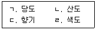
- ㄱ, ㄴ
- ㄱ, ㄴ, ㄷ
- ㄱ, ㄷ, ㄹ
- ㄴ, ㄷ, ㄹ
(정답률: 65%)
64. 비파괴 품질평가 방법에 관한 설명으로 옳지 않은 것은?
- 동일한 시료를 반복해서 측정할 수 있다.
- 분석이 신속하다.
- 당도선별에 사용할 수 있다.
- 화학적인 분석법에 비해 정확도가 높다.
(정답률: 67%)
65. 저장고 관리에 관한 설명으로 옳지 않은 것은?
- 저장고내 온도는 저장중인 원예산물의 품온을 기준으로 조절하는 것이 가장 정확하다.
- 입고시기에는 품온이 적정 수준에 도달한 안정기 때보다 더 큰 송풍량으로 공기를 순환시킨다.
- 저장고내 산소를 제거하기 위해 소석회를 이용한다.
- 저장고내 습도 유지를 위해 온도가 상승하지 않는 선에서 공기 유동을 억제하고 환기는 가능한한 극소화한다.
(정답률: 67%)
66. 다음의 용어로 옳은 것은?
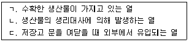
- ㄱ: 호흡열 ㄴ: 포장열 ㄷ: 대류열
- ㄱ: 포장열 ㄴ: 호흡열 ㄷ: 대류열
- ㄱ: 대류열 ㄴ: 호흡열 ㄷ: 포장열
- ㄱ: 포장열 ㄴ: 대류열 ㄷ: 호흡열
(정답률: 54%)
67. 원예산물의 수확 후 전처리에 관한 설명으로 옳지 않은 것은?
- 양파는 적재 큐어링 시 햇빛에 노출되면 녹변이 발생할 수 있다.
- 감자는 상처보호 조직의 빠른 재생을 위하여 30 ℃에서 큐어링한다.
- 감귤은 중량비의 3∼5 %가 감소될 때까지 예건하여 저장하면 부패를 줄일 수 있다.
- 마늘은 인편 중앙의 줄기부위가 물기 없이 건조되었을 때 예건을 종료한다.
(정답률: 37%)
68. 다음 원예산물 중 5 ℃의 동일조건에서 측정한 호흡속도가 가장 높은 것은?
- 사과
- 배
- 감자
- 아스파라거스
(정답률: 67%)
69. 원예산물의 적재 및 유통에 관한 설명으로 옳지 않은 것은?
- 유통과정중 장시간의 진동으로 원예산물의 손상이 발생할 수 있다.
- 팰릿 적재화물의 안정성 확보를 위하여 상자를 3단 이상 적재 시에는 돌려쌓기 적재를 한다.
- 골판지 상자의 적재방법에 따라 상자에 가해지는 압축강도는 달라진다.
- 신선 채소류는 수확 후 수분증발이 일어나지 않아 골판지 상자의 강도가 달라지지 않는다.
(정답률: 72%)
70. 농산물의 포장재료 중 겉포장재에 해당하지 않는 것은?
- 트레이
- 골판지 상자
- 플라스틱 상자
- PP대(직물제 포대)
(정답률: 65%)
71. 원예산물에서 에틸렌에 의해 나타나는 증상으로 옳은 것은?
- 배의 과심갈변
- 브로콜리의 황화
- 오이의 피팅
- 사과의 밀증상
(정답률: 40%)
72. 원예산물별 수확 후 손실경감 대책으로 옳지 않은 것은?
- 마늘을 예건하면 휴면에도 영향을 주어 맹아신장이 억제된다.
- 배는 수확 즉시 저온저장을 하여야 과피흑변을 막을 수 있다.
- 딸기는 예냉 후 소포장으로 수송하면 감모를 줄일 수 있다.
- 복숭아 유통 시 에틸렌 흡착제를 사용하면 연화 및 부패를 줄일 수 있다.
(정답률: 54%)
73. 0~4 ℃에서 저장할 경우 저온장해가 일어날 수 있는 원예산물을 모두 고른 것은?
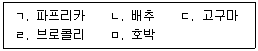
- ㄱ, ㄴ, ㄹ
- ㄱ, ㄷ, ㅁ
- ㄴ, ㄷ, ㄹ
- ㄷ, ㄹ, ㅁ
(정답률: 57%)
74. 원예산물의 화학적 위해 요인에 해당하지 않는 것은?
- 곰팡이 독소
- 중금속
- 다이옥신
- 병원성 대장균
(정답률: 53%)
75. GMO에 관한 설명으로 옳지 않은 것은?
- GMO는 유전자변형농산물을 말한다.
- GMO는 병충해 저항성, 바이러스 저항성, 제초제 저항성을 기본 형질로 하여 개발되었다.
- GMO 표시 대상 품목에는 콩, 옥수수, 양파가 있다.
- GMO 표시 대상 품목 중 유전자변형 원재료를 사용하지 않은 식품은 비유전자변형식품, Non-GMO로 표시할 수 있다.
(정답률: 59%)
4과목: 농산물유통론
76. 다음 내용에 해당하는 농산물 유통의 효용(utility)은?
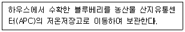
- 형태(form) 효용
- 장소(place) 효용
- 시간(time) 효용
- 소유(possession) 효용
(정답률: 60%)
77. 우리나라 농업협동조합에 관한 설명으로 옳지 않은 것은?
- 규모의 경제 확대에 기여하고 있다.
- 완전경쟁시장에서 적합한 조직이다.
- 거래비용을 절감하는 기능을 하고 있다.
- 유통업체의 지나친 이윤 추구를 견제하고 있다.
(정답률: 50%)
78. 선물거래에 관한 설명으로 옳지 않은 것은?
- 표준화된 조건에 따라 거래를 진행한다.
- 공식 거래소를 통해서 거래가 성사된다.
- 당사자끼리의 직접 거래에 의존한다.
- 헤저(hedger)와 투기자(speculator)가 참여한다.
(정답률: 59%)
79. 농산물의 산지 유통에 관한 설명으로 옳지 않은 것은?
- 농산물 중개기능이 가장 중요하게 작용한다.
- 조합공동사업법인이 설립되어 판매사업을 수행한다.
- 농산물 산지유통센터(APC)가 선별 기능을 하고 있다.
- 포전거래를 통해 농가의 시장 위험이 상인에게 전가된다.
(정답률: 30%)
80. 농산물 유통정보의 평가 기준에 관한 설명으로 옳지 않은 것을 모두 고른 것은?
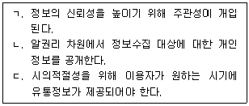
- ㄱ
- ㄱ, ㄴ
- ㄴ, ㄷ
- ㄱ, ㄴ, ㄷ
(정답률: 59%)
81. 배추 가격이 10 % 상승함에 따라 무의 수요량이 15 % 증가하였다. 이 때 농산물 가격 탄력성에 관한 설명으로 옳은 것은?
- 배추와 무의 수요량 계측 단위가 같아야만 한다.
- 배추와 무는 서로 대체재의 관계를 가진다.
- 교차가격 탄력성이 비탄력적인 경우이다.
- 가격 탄력성의 값이 음(-)으로 계측된다.
(정답률: 59%)
82. 마케팅 믹스(marketing mix)의 4P 전략에 관한 설명으로 옳지 않은 것은?
- 상품(product)전략: 판매 상품의 특성을 설정한다.
- 가격(price)전략: 상품 가격의 수준을 결정한다.
- 장소(place)전략: 상품의 유통경로를 결정한다.
- 정책(policy)전략: 상품에 대한 규제에 대응한다.
(정답률: 58%)
83. 농산물 표준화에 관한 내용으로 옳지 않은 것은?
- 포장은 농산물 표준화의 대상이다.
- 농산물은 표준화를 통하여 품질이 균일하게 된다.
- 농산물 표준화를 위한 공동선별은 개별농가에서 이루어진다.
- 농산물 표준화는 유통의 효율성을 높일 수 있다.
(정답률: 69%)
84. 농산물 수요곡선이 공급곡선보다 더 탄력적일 때 거미집 모형에 의한 가격 변동에 관한 설명으로 옳은 것은?
- 가격이 발산한다.
- 가격이 균형가격으로 수렴한다.
- 가격이 균형가격으로 수렴하다 다시 발산한다.
- 가격이 일정한 폭으로 진동한다.
(정답률: 알수없음)
85. 완전경쟁시장에 관한 설명으로 옳은 것은?
- 소비자가 가격을 결정한다.
- 다양한 품질의 상품이 거래된다.
- 시장에 대한 진입과 탈퇴가 자유롭다.
- 시장 참여자들은 서로 다른 정보를 갖는다.
(정답률: 67%)
86. SWOT분석의 구성요소가 아닌 것은?
- 기회
- 위협
- 강점
- 가치
(정답률: 58%)
87. 마케팅 분석을 위한 2차 자료의 특징으로 옳지 않은 것은?
- 1차 자료보다 객관성이 높다.
- 조사방식에는 관찰조사, 설문조사, 실험이 있다.
- 1차 자료수집과 비교하여 시간이나 비용을 줄일 수 있다.
- 공공기관에서 발표하는 자료도 포함된다.
(정답률: 44%)
88. 농산물 구매행동 결정에 영향을 미치는 인구학적 요인을 모두 고른 것은?
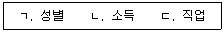
- ㄱ, ㄴ
- ㄱ, ㄷ
- ㄴ, ㄷ
- ㄱ, ㄴ, ㄷ
(정답률: 70%)
89. 제품수명주기(PLC)의 단계가 아닌 것은?
- 도입기
- 성장기
- 성숙기
- 안정기
(정답률: 58%)
90. 소비자를 대상으로 하는 심리적 가격전략이 아닌 것은?
- 단수가격전략
- 교역가격전략
- 명성가격전략
- 관습가격전략
(정답률: 58%)
91. 농산물 판매 확대를 위한 촉진기능이 아닌 것은?
- 새로운 상품에 대한 정보 제공
- 소비자 구매 행동의 변화 유도
- 소비자 맞춤형 신제품 개발
- 브랜드 인지도 제고
(정답률: 67%)
92. 유닛로드시스템(unit load system)에 관한 설명으로 옳지 않은 것은?
- 농산물의 파손과 분실을 유발한다.
- 유닛로드시스템은 팰릿화와 컨테이너화가 있다.
- 팰릿을 이용하여 일정한 중량과 부피로 단위화 할 수 있다.
- 초기 투자비용이 많이 소요된다.
(정답률: 62%)
93. 농산물의 물적유통 기능이 아닌 것은?
- 가공
- 표준화 및 등급화
- 상ㆍ하역
- 포장
(정답률: 47%)
94. 농산물 소매유통에 관한 설명으로 옳지 않은 것은?
- 무점포 거래가 가능하다.
- 대형 소매업체의 비중이 늘고 있다.
- TV 홈쇼핑은 소매유통에 해당된다.
- 농산물의 수집 기능을 주로 담당한다.
(정답률: 59%)
95. 농산물 도매시장에 관한 설명으로 옳지 않은 것은?
- 농산물 도매시장의 시장도매인은 상장수수료를 부담한다.
- 농산물 도매시장은 수집과 분산 기능을 가지고 있다.
- 농산물 도매시장은 출하자에 대한 대금정산 기능을 수행한다.
- 농산물 도매시장의 가격은 경매와 정가ㆍ수의매매 등을 통하여 발견된다.
(정답률: 54%)
96. 농산물의 일반적인 특성이 아닌 것은?
- 농산물은 부패성이 강하여 특수저장시설이 요구된다.
- 농산물은 계절성이 없어 일정한 물량이 생산된다.
- 농산물은 생산자의 기술수준에 따라 생산량에 차이가 발생된다.
- 농산물은 단위가치에 비해 부피가 크다.
(정답률: 60%)
97. 배추 1포기당 농가수취가격이 3천원 이고 소비자가 구매한 가격이 6천원 일 때, 유통마진율은?
- 25 %
- 50 %
- 75 %
- 100 %
(정답률: 70%)
98. 농산물의 유통조성 기능에 해당하는 것은?
- 농산물을 구매한다.
- 농산물을 수송한다.
- 농산물을 저장한다.
- 농산물의 거래대금을 융통한다.
(정답률: 58%)
99. 농산물 등급화에 관한 설명으로 옳은 것은?
- 농산물의 등급화는 소비자의 탐색비용을 증가시킨다.
- 농산물은 크기와 모양이 다양하여 등급화하기 쉽다.
- 농산물 등급의 설정은 최종소비자의 인지능력을 고려한다.
- 농산물 등급의 수가 많을수록 가격의 효율성은 낮아진다.
(정답률: 44%)
100. 농산물 수급안정을 위한 정책으로 옳지 않은 것은?
- 생산자 단체의 의무자조금 조성을 지원한다.
- 수매 비축 및 방출을 통해 농산물의 과부족을 대비한다.
- 농업관측을 강화하여 시장변화에 선제적으로 대응한다.
- 계약재배를 폐지하여 개별농가의 출하자율권을 확대한다.
(정답률: 67%)